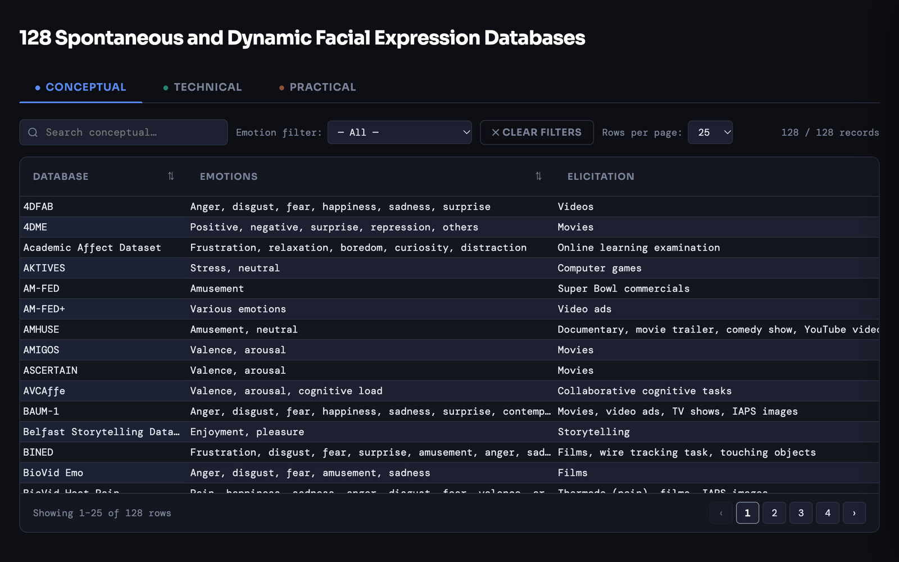

Published tool · Emotion Review 2026Published · August 2026
Facial Expression Database Finder
The interactive table from our systematic review of 128 spontaneous and dynamic facial expression databases (Emotion Review, 2026).
A searchable guide to the 128 publicly available video databases of spontaneous facial expressions (real, unposed reactions, on video) that our review found, with 32 details per database.
OSF (the Open Science Framework, a free archive for research files) can’t preview the table, so it downloads as a single file. Open it in a web browser on a computer; it needs an internet connection for search and sorting.
Published August 2026 · version 1

The recording: someone types “pain” into the search box and the count drops from 128 to 17 databases. They switch to the Technical tab, where the same 17 remain, and sort them by number of people so the largest collections come first. On wider screens they also open the card for the X-ITE Pain Database on its technical details (number of people and videos, clip length, frame rate, resolution, sound and speech, thermal video, camera viewpoint and setting) and close it again. Then they go back to the first tab and clear the search, and all 128 databases return.
Searching for “pain”, switching to the Technical tab, sorting by number of people and, on wider screens, opening a database’s card. Screen recording, about 14 seconds, no sound.
Recorded from the published table (OSF version 1).
Paused because your device asks for less motion.
Why it exists
Researchers who study real expressions, and engineers who train emotion AI, need recordings of people reacting, not acting. Those recordings are scattered across thousands of papers, each described differently. We gathered the 128 publicly available databases our review found in one place and described them the same way, so you can compare them side by side.
Three tabs, one table
The same 32 details per database, split across three tabs.
- ConceptualWhat was recordedThe emotions and states, how they were brought about, and how they were labelled. Whether trained coders labelled the facial movements with the Facial Action Coding System (FACS), the standard way to describe facial movements. Which body signals were measured, and who took part.
- TechnicalHow it was recordedNumber of people and videos, clip length, frame rate, resolution, sound, extra cameras such as depth or thermal, camera angle and setting.
- PracticalHow to get itWebsite, contact, how access works, whether the authors confirmed it was still available, and the references.


How to use it
Open the downloaded file in a web browser on a computer. Four moves cover most of what you’ll need.
Search
Type a word such as pain or EEG and the table narrows as you type. Each tab searches its own columns (try thermal on the Technical tab), and the databases you filter on one tab stay filtered on the others.
Filter by emotion
Choose an emotion label from the list to see the databases that use that exact label. Labels are matched exactly, so also try typing a word such as amusement.
Sort
Click a column header, such as the number of people, to bring the largest collections to the top.
Open a card
Click a database’s name to see everything about it in one panel. Many column headers carry a small information icon; hover over it to read that column’s definition.
The field at a glance
What the 128 databases add up to, from the review.
- 13,900 → 741 → 128papers screened by title and abstract → papers read in full → databases included
- 84kinds of emotions and other states recorded
- 11,800+people filmed, from 3 to 2,222 per database
- 105 of 128recorded in a laboratory
- 4%include self-conscious feelings such as pride or shame
- 50record sound as well as video
- 22 and 12use depth cameras and thermal cameras
All figures from Bian, Kim & Krumhuber (2026), Emotion Review. More charts from the review are on the research page.
How do you film a real emotion?
Most databases used ready-made material such as film clips and pictures (73%). A fifth used social or real-life tasks such as job interviews or driving simulations (20%). Some were inventive: Super Bowl commercials, comedy shows, a cold-water task, an unpleasant smell, a startle probe (a sudden, surprising stimulus), a game of Taboo and a mock crime interview.
Four questions to ask before you choose
- What kind of label do you need?A label can reflect what the person felt (they reported it themselves), what observers saw, or what a machine scored. Observer-labelled data suits research on how people perceive faces, not on what people felt.
- Does the set-up fit your question?For the timing of facial movements, 30 people filmed at 500 frames per second may tell you more than 2,000 filmed at 25.
- Who is in it?Most databases feature young adults. Check the age, gender and ethnicity columns before you generalise.
- Can you use it?Access rules differ. Check the Practical tab and each database’s own licence.
Good to know
- Availability was last checked with database authors in May 2025. Databases whose authors did not reply were kept on the strength of their publications. Things may have changed since.
- Most databases hold only spontaneous expressions; 16% also include posed clips for comparison.
- The table works best on a laptop or desktop screen.
- The table is the published version (Supplementary Table S1). Questions or corrections are welcome: .
How to cite
If you use the table or the review, please cite:
Bian, Y., Kim, H., & Krumhuber, E. G. (2026). A systematic review of 128 spontaneous and dynamic facial expression databases. Emotion Review. https://doi.org/10.1177/17540739261478876
The interactive table is Supplementary Table S1, archived on OSF at https://osf.io/7f6xt/files/h64ds.
Who made it
Yifan Bian, Hyunwoo Kim and Eva G. Krumhuber, Department of Experimental Psychology, University College London.